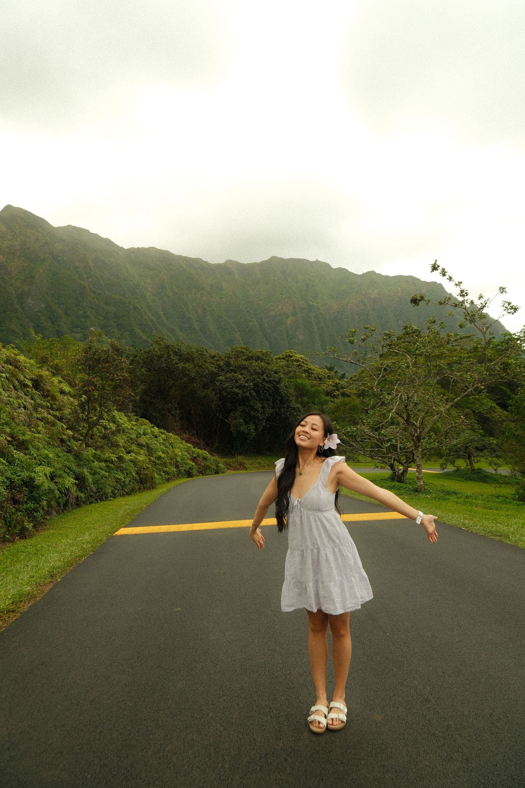
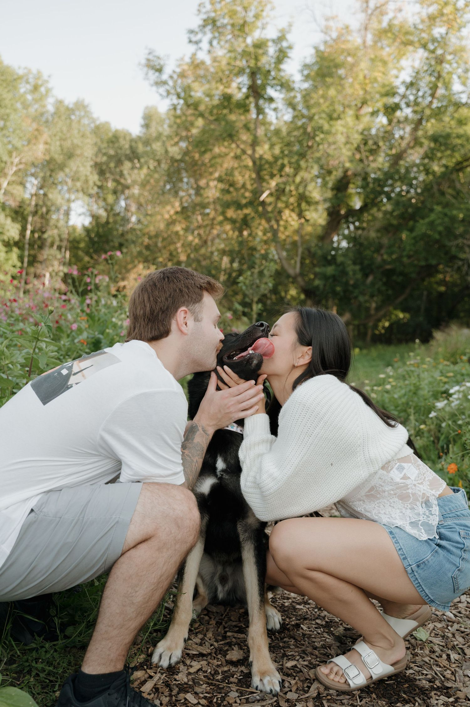
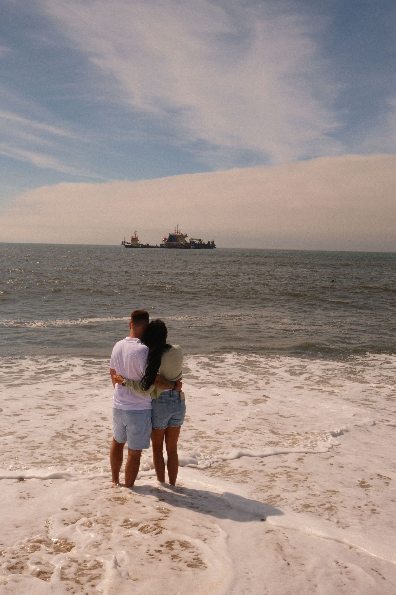
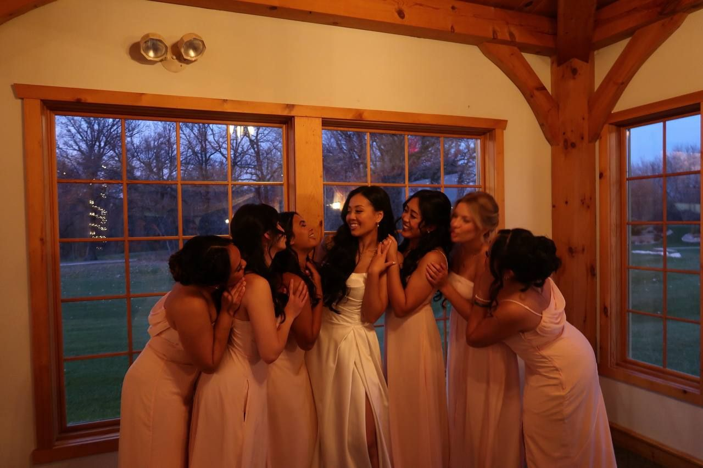
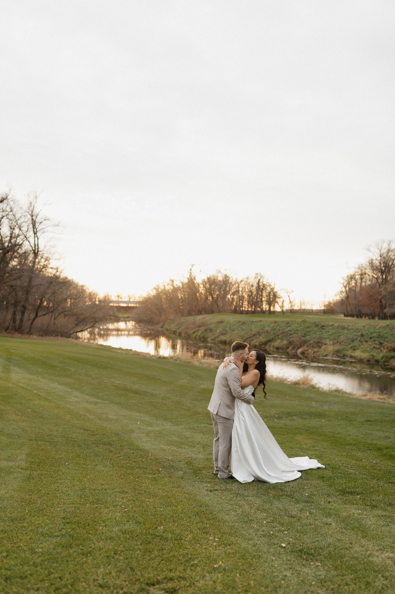

About
The gal behind the camera.
The gal behind the camera who's obsessed with chasing golden light, all the laughs, and telling love stories through photos. I am a registered nurse working in a chaotic Emergency Department but on the side you can find me reading fantasy books, playing ultimate frisbee, cuddling with my rescue Scout, or spending time with my husband, family, and besties.




Now your story